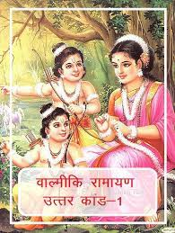

|  |
The Uttara Kanda, often considered to be a later addition to the original story, deals with the final years of Rama, Sita and his brothers. Even though Sita passed the test of fire, Rama bends to public opinion and banishes Sita to the forest under the hermitage of the sage, Valmiki. When Rama banished Sita, she was pregnant with twin children. She gives birth to the two kids in the forest, Lava and Kusha, who grow up under the guidance and teachings of Valmiki.
Valmiki composed Ramayana , which was sung by Lava and Kusha in the presence of Rama and the large audience. When they recite about Sita, Rama is filled with grief. Valmiki produces Sita and she vanishes into mother Earth, where she came from. Rama, later learns that Lava and Kusha are his children. Years later Rama is informed by a messenger of God, that the objective of his being born on the Earth is fulfilled, and so returns to his heavenly abode.
|
|---|
| Back | Home Page |